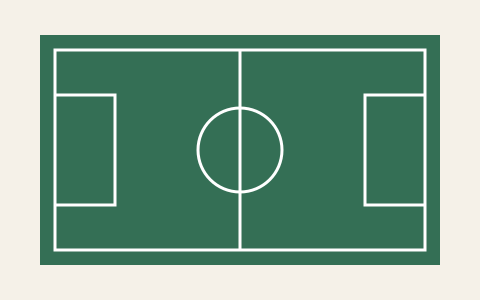
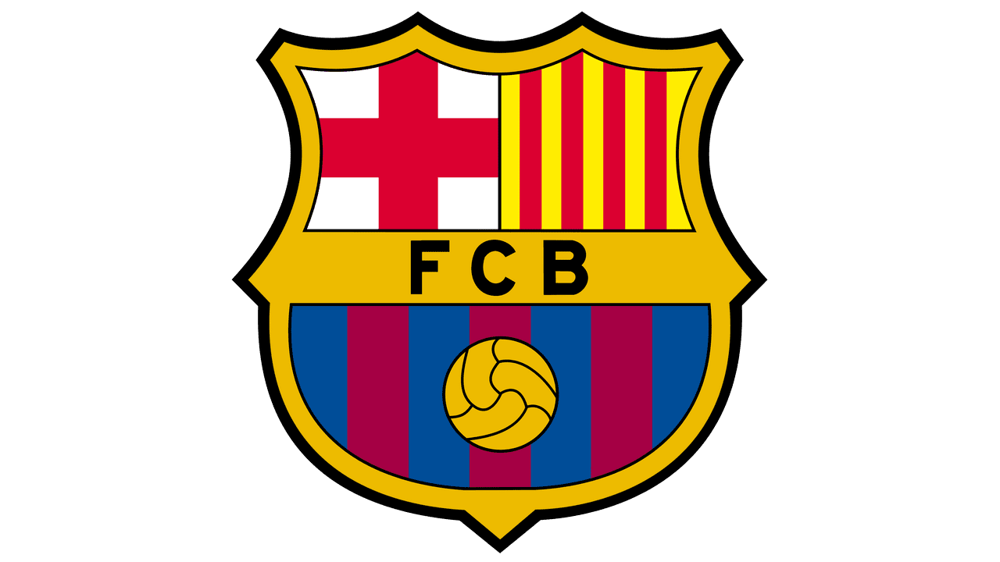
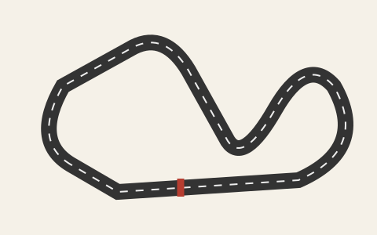
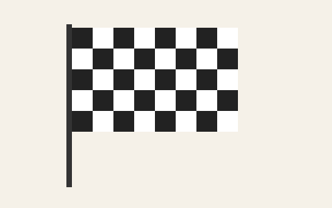

En dehors des cours
Le football et la Formule 1 occupent une grande place dans mes centres d’intérêt.
Le football
J’aime beaucoup le football. Mon club préféré est le FC Barcelone et Lionel Messi est un joueur que j’apprécie particulièrement.

Le Barça et Messi
Je voulais leur réserver une place sur ce site, parce qu’ils font partie de ce que j’aime en dehors de mes études.

La Formule 1
J’aime aussi beaucoup la Formule 1, et Lewis Hamilton est mon pilote préféré. Le nom « Prochain départ » fait aussi référence à cet univers.

